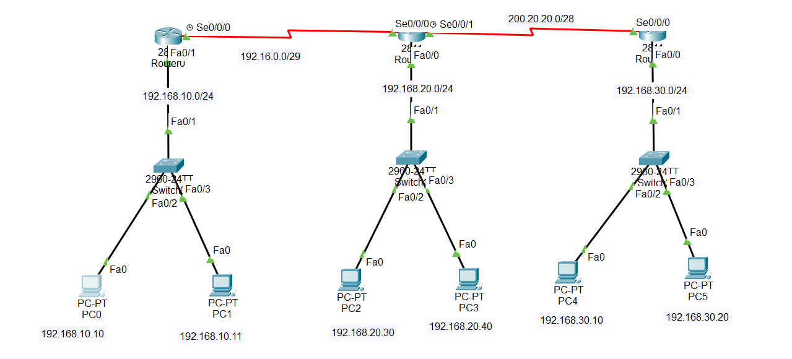

Lab : Standard Access-list
TASK: Configure the Appropriate router as per the rules given
1.Deny the host 192.168.10.10 communicating with others.
2.Permit all the remaining traffic
NOTE: the Above ACL rules should not affect the other communication.
Steps:
Router0:
Router(config)#int s 0/0/0
Router(config-if)#ip add 192.16.0.1 255.255.255.248
Router(config-if)#no sh
Router(config-if)#exit
Router(config-if)#int f 0/1
Router(config-if)#ip add 192.168.10.1 255.255.255.0
Router(config-if)#no sh
Router(config-if)#exit
Router(config)#route rip
Router(config-router)#network 192.168.10.0
Router(config-router)#network 192.16.0.0
Router(config-router)#exit
Router1:
Router(config-if)#int s 0/0/1
Router(config-if)#ip add 200.20.20.1 255.255.255.240
Router(config-if)#no sh
Router(config-if)#exit
Router(config)#int s 0/0/0
Router(config-if)#ip add 192.16.0.2 255.255.255.248
Router(config-if)#no sh
Router(config-if)#exit
Router(config)#int f 0/0
Router(config-if)#ip add 192.168.20.1 255.255.255.0
Router(config-if)#no sh
Router(config-if)#exit
Router(config)#route rip
Router(config-router)#network 192.16.0.0
Router(config-router)#network 200.20.20.0
Router(config-router)#network 192.168.20.0
Router(config-router)#exit
Router2:
Router(config)#int s 0/0/0
Router(config-if)#ip add 200.20.20.2 255.255.255.240
Router(config-if)#no sh
Router(config-if)#exit
Router(config-if)#int f 0/0
Router(config-if)#ip add 192.168.30.1 255.255.255.0
Router(config-if)#no sh
Router(config-if)#exit
Router(config)#route rip
Router(config-router)#network 200.20.20.0
Router(config-router)#network 192.168.30.0
Router(config-router)#exit
Router0 ACL rule set:
Router(config)#access-list 10 deny host 192.168.10.10
Router(config)#access-list 10 permit any
Router(config)#int s 0/0/0
Router(config-if)#ip access-group 10 out
Router(config-if)#no sh
Router(config-if)#exit
Ping check from 192.168.30.20 (PC5):
C:\>ping 192.168.10.10
Pinging 192.168.10.10 with 32 bytes of data:
Request timed out.
Request timed out.
Request timed out.
Request timed out.
Ping statistics for 192.168.10.10:
Packets: Sent = 4, Received = 0, Lost = 4 (100% loss),
C:\>ping 192.168.10.11
Pinging 192.168.10.11 with 32 bytes of data:
Reply from 192.168.10.11: bytes=32 time=20ms TTL=125
Reply from 192.168.10.11: bytes=32 time=2ms TTL=125
Reply from 192.168.10.11: bytes=32 time=2ms TTL=125
Reply from 192.168.10.11: bytes=32 time=21ms TTL=125
Ping statistics for 192.168.10.11:
Packets: Sent = 4, Received = 4, Lost = 0 (0% loss),
Approximate round trip times in milli-seconds:
Minimum = 2ms, Maximum = 21ms, Average = 11ms